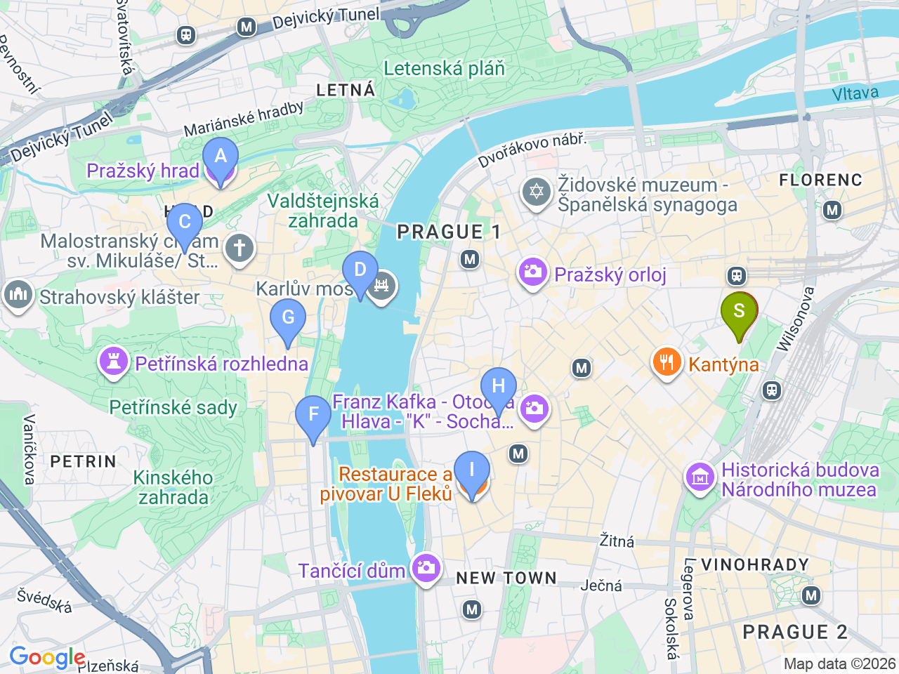

Day 25 · 2026-09-09（三）
捷克・布拉格/CK小鎮 Day 2/5
布拉格精華一日：城堡・黃金小巷・查理大橋
一早登布拉格城堡避開排隊，沿 Nerudova 老街走下山，午後跨越查理大橋
💱捷克幣匯率參考（查詢當日）：1 CZK ≈ 0.041 EUR（約 100 CZK ≈ 4.1 EUR）；1 CZK ≈ 1.52 TWD（約 100 CZK ≈ 152 TWD）。實際匯率會隨市場波動，僅供參考，換匯/刷卡以當下實際匯率為準
⏰布拉格城堡建議事先在 hrad.cz 訂 Circuit B 套票（CZK 250，含聖維特大教堂、舊皇宮、聖喬治教堂、黃金小巷），2026夏季旺季採時段預約制，現場排隊常要等30-45分鐘

固定時間行程DAY 25
| 時間 | 地點 | 地點 (英文) | 交通方式／班次 | 價格 | 預計停留(分鐘) | 備註 |
|---|---|---|---|---|---|---|
| 09:00 | 布拉格城堡（Circuit B：教堂＋舊皇宮＋聖喬治教堂＋黃金小巷） | 1Prague Castle, Prague | 步行 | CZK 250（Circuit B） | 150 | 事先上 hrad.cz 訂時段票，一早去人潮較少 |
| 09:45 | 黃金小巷 | 2Golden Lane, Prague Castle, Prague | 步行 | 含在Circuit B門票內 | 40 | 中世紀工匠小屋，卡夫卡曾在22號小屋短居 |
彈性探索景點DAY 25
| 地點 | 地點 (英文) | 預計停留(分鐘) | 價格 | 備註 |
|---|---|---|---|---|
| Nerudova 老街散步 | ANerudova, Prague | 約30分鐘 | 免費 | 從城堡走下山到小城區的著名坡道老街，兩旁巴洛克門牌很有特色 |
| 午餐：小酒館 denní menu | 見上方三餐資訊 | Malá Strana一帶找每日套餐最划算 | ||
| 查理大橋 | BCharles Bridge, Prague | 約45分鐘 | 免費 | 布拉格最著名地標，橋上雕像林立，建議上午或近黃昏人潮較少時段 |
| Café Savoy（咖啡/甜點） | CCafé Savoy, Prague | 約45分鐘 | 約 CZK 150-250／人 | 維也納式老咖啡館，天花板裝飾很美，招牌舒芙蕾 |
| 晚餐：U Modré Kachničky | DU Modré Kachničky, Prague | 約90分鐘 | 見上方三餐資訊 | 查理大橋旁，傳統捷克菜，較高價位 |
| 晚餐備案：Café Louvre | FCafé Louvre, Prague | 約60分鐘 | 約 CZK 200-350／人 | Národní 街上的百年老咖啡館，卡夫卡/愛因斯坦都曾是常客，環境優雅 |
| 晚餐備案：U Fleků | GU Fleků, Prague | 約90分鐘 | 約 CZK 250-400／人 | 1499年開業的老字號自釀啤酒館，招牌黑啤酒，氣氛熱鬧但較觀光化 |
每日三餐
午餐
小巷城堡下山路上的小酒館約 CZK 150-250／人
Malá Strana 一帶找有「denní menu」（每日午間套餐，通常含湯+主餐）的小酒館最划算，不特別指定店家；不想找的話可以直接走到 Národní 街上的 Café Louvre（Národní 22）坐下來吃，環境舒適
晚餐
U Modré KachničkyU Modré Kachničky約 CZK 500-800／人
📍 Nebovidská 6, Prague浪漫氣氛的傳統捷克餐廳，招牌烤鴨，離查理大橋很近，較高價位但評價很好；備案① Café Savoy（Vítězná 5，維也納式老咖啡館，招牌舒芙蕾，可當下午茶或輕晚餐）；備案② U Fleků（Křemencova 11，1499年開業的老字號啤酒館，自釀黑啤酒，氣氛道地但較觀光化）
住宿資訊
Franz BY ZEITRAUM
📍 Opletalova 1683/41, Prague